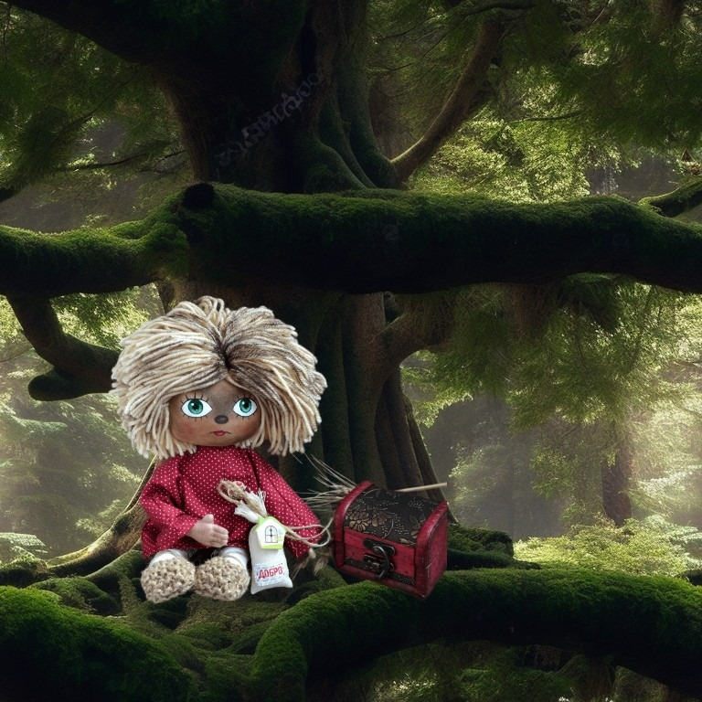
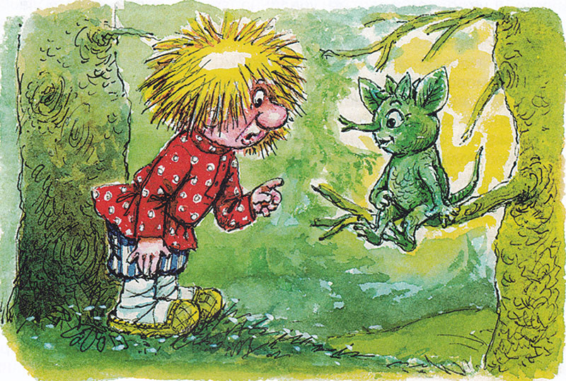
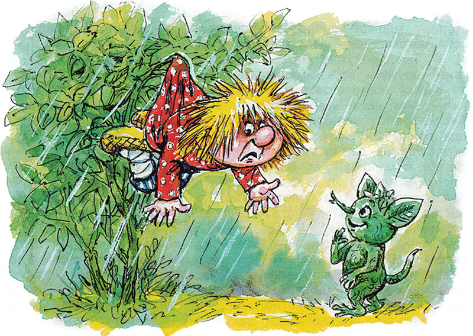
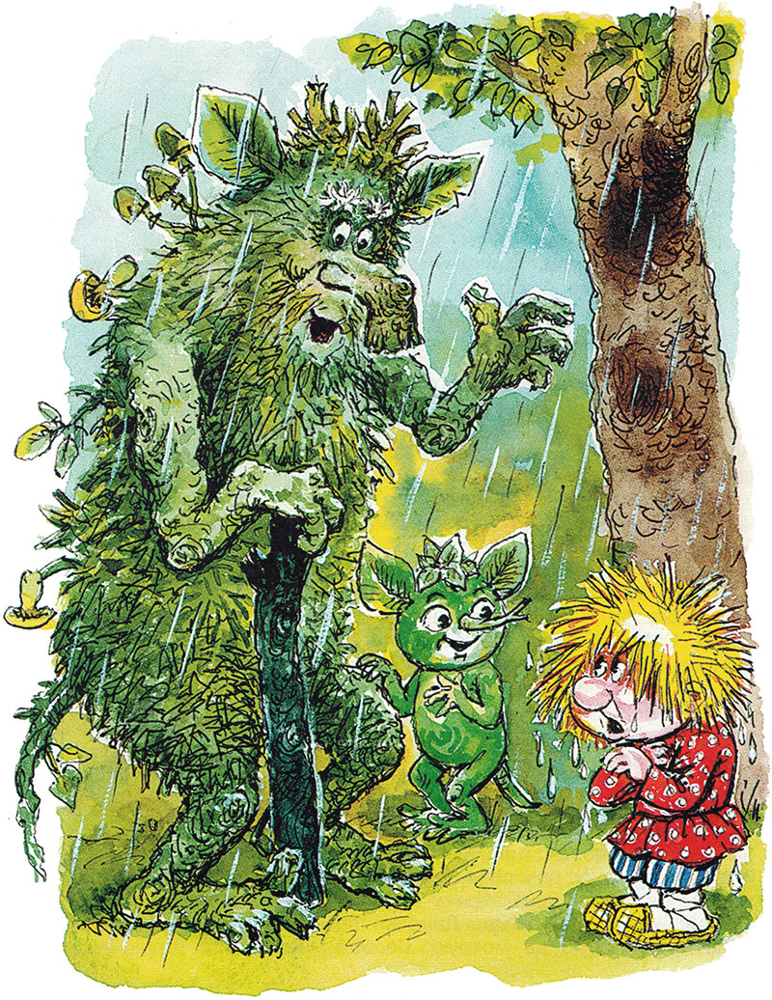

Домовёнок Кузя - продолжение -5.
Татьяна Александрова
11. В большом лесу
Маленький домовенок с размаху налетел на огромное дерево и кувырк вверх лаптями. Дерево так стукнуло его по лбу, что искры из глаз посыпались. Кузька зажмурился, чтобы от них лес не загорелся. А дерево шумит:
— Куда бежишь? Почто спешишь?
Сороки стрекочут:
— Воры! Воры! Прячься в норы!
— Бить его мало! — заливаются мелкие пташки. — Бить! Бить!
— Я не вор! — обиделся Кузька, открыл глаза, увидел над собой зеленую змею и хвать ее палкой.
— Ой-ой! — запищал кто-то, — Зачем бьешь мой хвост? Сей же час убегай, откуда прибежал! Ты такой страшный! Глаза б мои на тебя не смотрели! Вон из нашего леса!
Поднял Кузька голову, а в листве чьи-то глаза блестят и мигают.
— Я позабыл, откуда прибежал!
Из листвы высунулась зеленая лапка, ткнула пальцем в чащу. Там кто-то урчал, выл, повизгивал, деревья тянули скрипучие лапы.
— Не туда показываешь! — испугался домовенок.
— Туда, туда! — выглянула зеленая мордочка. — Ты пробежал мимо сосен Кривобоконькой и Сиволапки, между осинами Рыжкой и Трясушкой, обежал куст Растрепыш, пободал Могучий дуб — и лапки кверху.
— У тебя что, все деревья с именами?
— А как же! Иначе они откликаться не будут А ты в каком лесу живешь? — Зеленое существо перескочило на нижнюю ветку.
— Это почему же в лесу? — удивился домовенок, потихоньку разглядывая незнакомца: надо же, весь зеленый, от макушки до пяток, даже уши, даже хвост (его-то и принял Кузька за змею).

— Всяк в своем лесу живет, — объяснил зеленохвостик. — Мои братья Еловик и Сосновик — в еловом и сосновом. А ты небось в березовой роще? Ты же белый, толстый, как березовый пень!
— Сам ты пень! — обиделся Кузька.
Лесной житель засмеялся и очутился рядом с домовенком:
— Гляди-ка! Разве я похож на пень? И правда, он был похож на сучок, поросший зеленым мхом. Только этот сучок прыгал и разговаривал.
— А ты не знаешь, — спросил Кузька, — где тут у вас неподалеку маленькая деревня у небольшой речки, все избы хороши, моя лучше всех?
— А что такое деревня? Что такое изба? — заинтересовался незнакомец.
12. Дождь в лесу
Домовенок начал объяснять, но тут крупная дождевая капля стукнула его по носу. Черная туча накрыла лес. Кузька схватил сундучок, прятавшийся в траве, и бегом под высоченную ель. Лил дождь, а Кузька сидел на сухой хвое, будто на половике. Наверное, с тех пор как эта ель была маленькой пушистой елочкой, ни одна капля не упала на землю возле ее ствола.
Ветки раздвинулись, и мокрая зеленая мордочка заглянула в окошко:
— Ты чего спрятался? А ты кто?
— Домовой, — ответил Кузька.
— Домовых не бывает! Про них только сказки есть, — сказал лесной житель. — Чего пугаешь?
Кузька не стал спорить. Люди и то боятся домовых. А зеленохвостик подавно испугается и поминай как звали. И поминать-то будет некого.
— А ты кто? Здешняя неведомая зверушка?
— А вот и нет! Не угадал! Еще угадывай!
Кузька ответил, что всю жизнь будет думать и не угадает.
— Всю-всю жизнь? — восхитился незнакомец. — И не угадаешь? Лесовик я, леший, вот кто. И зовут меня Лешик. Мне уже пять веков. А моему дедушке Диадоху сто веков!
«Из огня да в полымя», — подумал Кузька и со страху забился под ель как можно глубже.
— Врешеньки-врешь! У леших клыки до самого носа торчат, язык во рту не умещается, наружу высунут, и живот на сторону мешком висит. Не похож ты на них. Нечего зря на себя наговаривать!
— Ты перепутал! Это про домовых рассказывают, что у них язык наружу и живот мешком. — Кузька онемел от такого нахальства, а Лешик продолжал: — Мой тятя выше этой елки! Он в Обгорелый лес ушел. Лет на пять или на пятьдесят, как управится. Дедушка говорит, там давно хорошего хозяина не было. А без хозяина лес сирота: сушь да глушь. Хозяин хорош — и лес пригож. Хозяин шагнет — и дело пойдет. Мы с дедом тут хозяева.
— А правда, твой дед, старый леший, — лихой злодей? Зря народ пугает, в болоте топит, на деревья забрасывает. Детей крадет, коров угоняет. А рявкнет — уши не успеешь загородить и оглохнешь!
Сказал Кузька все, что знал про леших, и самому стало страшно. Схватил сундучок — и под дождь, мимо куста Растрепыша, мимо Рыжки и Трясушки, мимо Кривобоконькой и Сиволапки.
Скорей в маленькую деревню у небольшой речки, в лучшую избу, где так уютно, когда за окнами непогода. Сколько раз Кузька пел обидные дразнилки дождю, показывал ему язык из-под печки. И вот ливень настиг домовенка в чужом страшном лесу.
— Не уйдешь! Улюлю! — заревел поток, потащил, закрутил Кузьку, как щепку, пока рубаха не зацепилась за куст. Хорошо, рубаха крепкая, держит своего хозяина.
Но и печальному, и страшному бывает конец. Перестал дождь. Улетел ветер. Каплют капли с веток. Шлепают лягушки по лужам. Им хорошо. Они знают, куда прыгать. А Кузька так и будет висеть тут, как мокрый лист, потом, как сухой, потом осыплется и замерзнет под снегом.
— А, вот ты где! Что ты тут делаешь? — Возле куста, рот до ушей, стоял Лешик. — Или ты правда домовой, ежели моего дедушку не знаешь?

И Кузька, болтаясь на кусте, услышал, что дедушка у Лешика — добрый, разумный, красивый, зайчиков пасет, птиц бережет, деревья растит.
— А не знает ли твой дед маленькую деревню у небольшой речки? — стуча зубами поинтересовался Кузька.
— Дедушка Диадох все знает! — ответил Лешик. — Побежали к нему! Куст Колючие лапки, отпусти моего друга!
Куст зашелестел и еще крепче обхватил домовенка.
— Говоришь, спас его? Поток тащил его в Бездонный овраг? Какой ты хороший, куст Колючие лапки! Спасибо тебе!
Ветки отпустили Кузьку.
— Поклонись кусту, — шепнул Лешик. — Он это любит.
Пришлось кланяться кусту. А потом и куст Колючие лапки долго махал вслед друзьям всеми своими листьями и колючками.
13. Берлога
Маленький домовенок вслед за маленьким лешонком выскочил на большую поляну. Посреди — бугор, на бугре — сосна, красная, как огонь в печи. Большой корявый пень под сосной качнулся, приподнялся. Под ним открылась дыра. Из дыры, упираясь в землю корнями, полез еще один корявый пень. Кузька наутек от такого ужаса.
— Постой, сынок, погоди чуток! — добрым голосом крикнул ему пень. — И ты, Лиса, постой!
Пень шагнул к кустам и вытащил из них рыжую Лису.
Тут Кузька разглядел, что у пня не корни, а руки и ноги.
— Ты смотри, зайчишек молоденьких не лови. Они у меня все на счету, — сказал живой пень, держа в руках Лису. — Вот разведется у нас побольше зайцев, тогда и гоняйся за лопоухими.
Пень погрозил Лисе пальцем и поставил на землю. Морда у Лисы была такая, будто она сама только что держала кого-то поперек живота, учила уму-разуму. Быстро оглядев Кузьку, Лиса гордо ушла в кусты.
Так вот какой дедушка Диадох! Руки-ноги похожи на корни, волосы — на сухую траву, борода — на мох, а глаза — как ясное небо.

— А это кто же? На кого похожий? — спросил дед Диадох, разглядывая Кузьку. — Для медвежонка слишком голый. Для лягушонка слишком лохматый. Водяной посуху не ходит. На кикимору не очень похож. И весь трясется. Уж не родня ли ты нашей осине?
Кузька так стучал зубами, что дятлы на стук откликались.
— Да он озяб! — Дед схватил домовенка, утащил его под пень, в черную нору, и опустил во что-то шуршащее, мягкое, теплое.
Когда глаза привыкли к темноте, Кузька разобрал, что сидит в коробе с сухими листьями.
— Сколько живу на свете, — удивлялся дед, — таких лешонков не видал.
— Он не лешонок, дедушка. Он — домовенок.
— А-а. То-то, гляжу, больно дикий. Из роду домовых, говоришь? Слыхать слыхал, видать не видал. Это растет на тебе или как? — тронул он Кузькину одежду, с которой текла вода.
Вместо ответа Кузька начал стаскивать мокрые лапти, рубаху.
— Вот-вот, так я и думал. Скидывай, сынок, погрейся чуток, — ласково приговаривал дед Диадох, забирая одежду и укладывая дрожащего Кузьку поглубже в короб. — Лежи, согревайся, сил набирайся. Деревья по осени тоже листву сбрасывают, холодную да мокрую. Весной новая вырастет.
— У меня не вырастет! — испугался Кузька.
— Зато высохнет! — успокоил его дед, укутывая по самую шею сухими листьями. — А это что? — и взял у Кузьки сундучок.
— Там тайна, дедушка! — еще больше испугался Кузька.
— Ну, коли так, береги ее! — сказал дед, помогая запрятать сундучок на самое дно короба.
Кузька огляделся. Батюшки, сколько змей, целые выводки! Не сразу догадаешься, что это извиваются и свешиваются с потолка корни деревьев.
Раз восемь в дверь заглянула любопытная заячья мордочка. То ли восемь зайцев один за другим прибегали взглянуть на Кузьку, то ли заяц, которого старый леший спас от Лисы, заглядывал восемь раз.
По углам и вдоль стен берлоги стояли еще короба и корзины, а в них что-то шевелилось, шуршало, потрескивало.
Кузька то и дело ловил на себе взгляды крошечных блестящих глаз. Какие-то малявки сидели на корнях, ползали по стенам и смотрели, смотрели на домовенка.
— А ну, кыш отсюда! — прогнал дед лесную мелочь и, смеясь, повторил: — Так тебе наша осина не родня ли?
— Мне деревья не родные. Мне бы что-нибудь поесть, дедушка.
Дед Диадох, задумчиво пожевав губами, принес из темного угла сухую лягушку.
— Кормись, сынок!
Кузька не стал есть сушеную лягушку.
— Не любит, — сокрушался дед. — Я журавлю берег. Деревом ее, бедную, придавило. Может, это хочешь? — и принес из другого угла пучок сухой душистой травы.
Кузька понюхал и отвернулся.
— Не умеет! — вздохнул дед. — А ничего, вкусная, я пожевал. Лосятам закуску припас к зиме. Да скажи нам, чем ты сыт бываешь?
— Блинами! Пирогами! Молоком! Киселем! Кашей! Репой! Квасом! Щами! Хлебушком! — единым духом выпалил Кузька и облизнулся.
— Сколько незнакомых вещей есть на свете, — покачал головой дед. — Век живи…
— Век учись, — вздохнул домовенок.
— И у вас так говорят? — обрадовался дед. — Ну, коли помыслы у нас одинаковые, то и вкусы одинаковые найдутся. Повернись да оглянись. Может, выберешь чего по вкусу?
Кузькины глаза, привыкшие к темноте, мигом разглядели большущую корзину с орехами.
— Э, да у тебя вкусы, как у белки! — рассмеялся дед и притащил еще два короба: один с шишками, другой с сухими грибами.
Кузька отнесся к этому угощению без особой радости. Дед подумал, подумал и приволок колоду с медом. Тут-то гость показал, на что способны домовые.
Любопытный Лешик тоже лизнул и потом долго вытирал язык то одним зеленым локтем, то другим. Так и закусывал домовенок орехами с медом, пока не почувствовал, что сей же час уснет. Последнее, что услышал Кузька, засыпая:
— Дедушка, в лесу дождь? — Дождь, внучек, ливень… — Дедушка, в лесу ветер? — Ветер, внучек, буря… — Дедушка, в лесу гроза? — Гроза, внучек, бушует, ветер дует, молния полыхает, всех пугает. Пора нам с тобою там быть, беду опередить.
Продолжение следует.